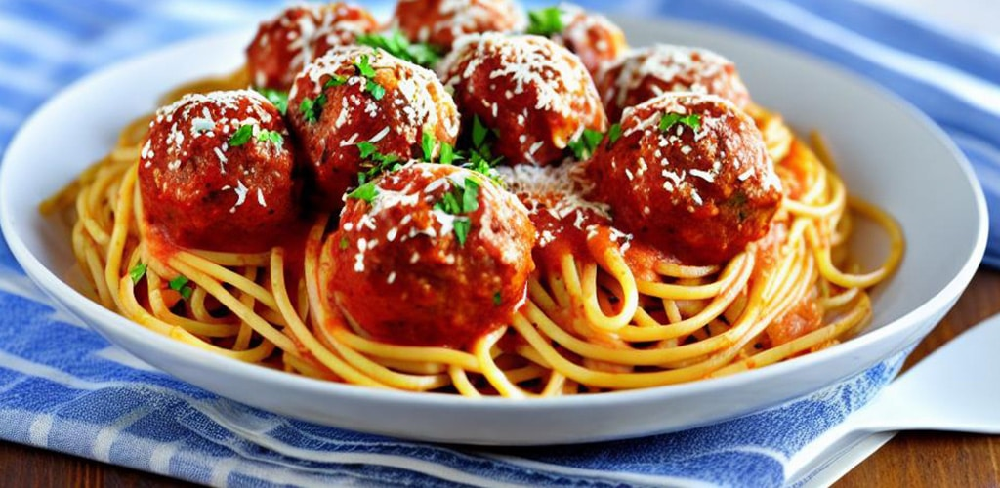

RECETA DE ESPAGUETIS CON ALBÓNDIGAS

Ingredientes:
- 400 g de espagueti
- 500 g de carne molida (mitad ternera, mitad cerdo)
- 1/2 taza de pan rallado
- 1/4 taza de leche
- 1 huevo
- 1/4 taza de perejil fresco picado
- 2 dientes de ajo, picados finamente
- Sal y pimienta al gusto
- 2 cucharadas de aceite de oliva
- 1 cebolla mediana, picada finamente
- 2 latas de 400 g de tomate triturado
- 1 cucharadita de azúcar
- 1 hoja de laurel
- 1 cucharadita de orégano seco
Instrucciones:
- Cocina el espagueti en una olla grande con agua hirviendo y sal, siguiendo las instrucciones del paquete hasta que esté al dente.
- En un tazón grande, mezcla la carne molida, el pan rallado, la leche, el huevo, el perejil, el ajo, la sal y la pimienta. Amasa bien y forma albóndigas de tamaño mediano.
- Calienta el aceite de oliva en una sartén grande a fuego medio-alto. Agrega las albóndigas y cocina, volteándolas ocasionalmente, hasta que estén doradas por todos lados. Retira las albóndigas de la sartén y reserva.
- En la misma sartén, añade la cebolla picada y cocina a fuego medio hasta que esté tierna y translúcida.
- Agrega el tomate triturado, el azúcar, la hoja de laurel y el orégano seco. Cocina a fuego medio-bajo durante 20-25 minutos, hasta que la salsa haya espesado.
- Vuelve a colocar las albóndigas en la sartén con la salsa, tapa y cocina a fuego lento durante 10-15 minutos, hasta que las albóndigas estén bien cocidas.
- Escurre el espagueti y sírvelo en platos. Cubre con la salsa de albóndigas y espolvorea con queso parmesano rallado adicional y perejil fresco picado, si lo deseas.